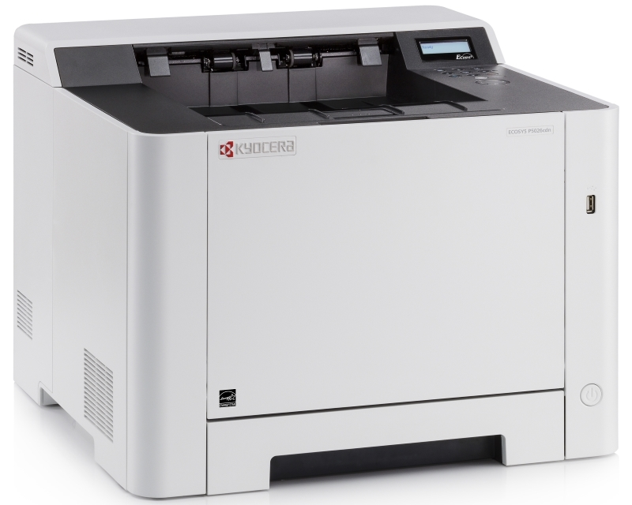

BIROOPREMA ĐORĐEVIĆ

KYOCERA ECOSYS P5026CDN Laser
|

|
||
| Štampa | Tip | Laserski |
| Boja | Monohromatski (crno-beli) | |
| Format | A4 | |
| Sistem štampe | KYOCERA ECOSYS Laser | |
| Rezolucija štampe | 9.600 x 600 dpi (uz Multi-bit tehnologiju) | |
| Duplex štampa | Da | |
| Brzina monohromatske štampe | 26ppm | |
| Brzina štampe u boji | 26ppm | |
| Vreme štampe prve strane | 10.5 sekundi (monohromatski) 9,5 sekundi (u boji) | |
| Maksimalni mesečni obim štampe | 50.000 strana | |
| Skeniranje | Brzina skeniranja monohromatski | 30ipm (300dpi,A4) |
| Brzina skeniranja u boji | 23ipm (300dpi, A4) | |
| Rezolucija skeniranja | 600 x 600 dpi | |
| Podržani profili | TWAIN, WIA, WSD | |
| Podržani formati skeniranja | TIFF, PDF, PDF/A, JPEG, XPS | |
| Kopiranje | Dodatne funkcijei | 5 stepena uveličavanja, 25% - 400% umanjenje - uveličavanje, 7 stepena umanjenja |
| Faks | ||
| Tip | Super G3 | |
| Povezivost | Povezivost | LAN (mrežni), USB |
| Dodatni priključci / Slotovi | 1x USB 2.0 (tip A) Host - za povezivanje USB fleš diskova | |
| Ostale osobine | USB 2.0 priključak, 10/100/1.000Mbps Ethernet protok | |
| Potrošni materijal | Kapacitet inicijalnog tonera (crni) | 1200 strana |
| Kapacitet inicijalnog tonera (u boji) | 1200 strana | |
| Kapacitet regularnog tonera (crni) | 4000 strana | |
| Kapacitet regularnog tonera (u boji) | 3000 strana | |
| Toner | TK-5240K, TK-5240C, TK-5240M, TK-5240Y | |
| Servisni set | 100.000 strana | |
| Ostalo | ||
| Displej | Monohromatski LCD | |
| Procesor | 800MHzC | |
| Memorija | 512MB | |
| Emulacije | PCL6, PostScript 3 (KPDL 3), XPS Direct Print, PDF Direct Print | |
| Kapacitet fioke | 50 listova (multipurpose tray), 250 listova (maksimalni kapacitet: 550 listova) | |
| Podržana debljina papira | 60g/m2 - 220g/m2 | |
| Nivo buke | 49dB | |
| Fizičke karakteristike | Dimenzije | 495mm x 429mm x 417mm |
| Masa | 26kg | |
| Boja | Crno-bela | |
| Garancija | Garancija | 2 godine |